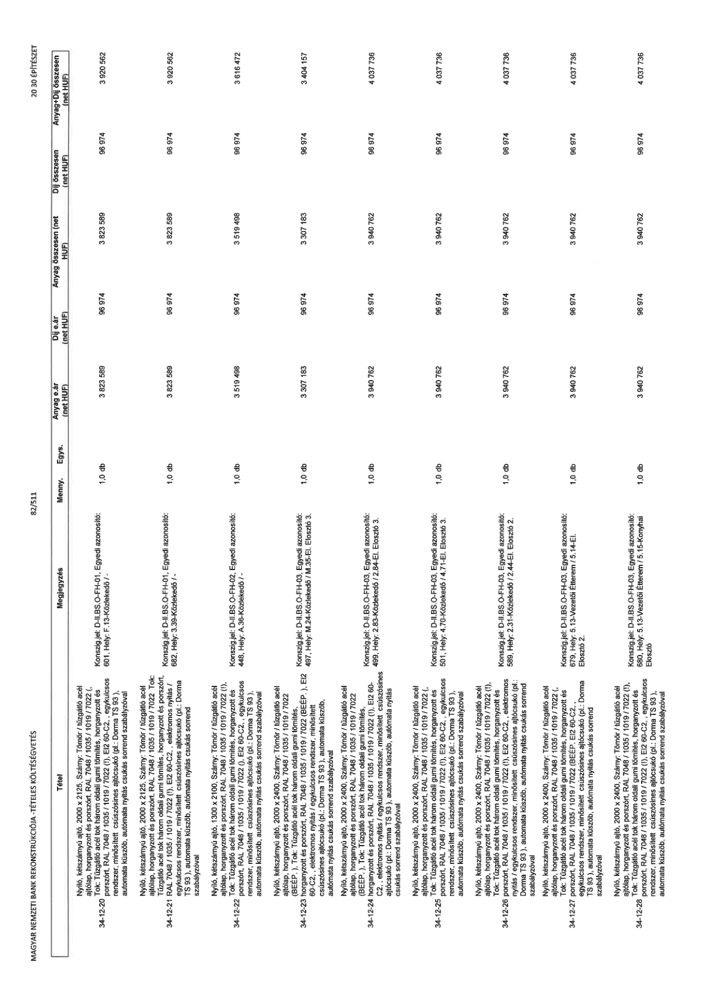

| Tétel | Megjegyzés | Menny. | Egys. | Anyag e.ár (net HUF) | Díj e.ár (net HUF) | Anyag összesen (net HUF) | Díj összesen (net HUF) | Anyag+Díj összesen (net HUF) |
|---|---|---|---|---|---|---|---|---|
| 34-12-20 Nyíló, kétszárnyú ajtó, 2000 x 2125, Szárny: Tömör / tűzgátló acél ajtólap, horganyzott és porszórt, RAL 7048 / 1035 / 1019 / 7022 (!), Tok: Tűzgátló acél tok három oldali gumi tömítés, horganyzott és porszórt, RAL 7048 / 1035 / 1019 / 7022 (!), EI2 60-C2, ,, egykulcsos rendszer, minősített csúszósínes ajtócsukó (pl.: Dorma TS 93 ), automata küszöb, automata nyitás csukás sorrend szabályzóval | Konszig jel: D-II.BS.O-FH-01, Egyedi azonosító: 601, Hely: F.13-Közlekedő / - | 1,0 | db | 3 823 589 | 96 974 | 3 823 589 | 96 974 | 3 920 562 |
| 34-12-21 Nyíló, kétszárnyú ajtó, 2000 x 2125, Szárny: Tömör / tűzgátló acél ajtólap, horganyzott és porszórt, RAL 7048 / 1035 / 1019 / 7022 (!), Tok: Tűzgátló acél tok három oldali gumi tömítés, horganyzott és porszórt, RAL 7048 / 1035 / 1019 / 7022 (!), EI2 60-C2, ,, elektromos nyitás / egykulcsos rendszer, minősített csúszósínes ajtócsukó (pl.: Dorma TS 93 ), automata küszöb, automata nyitás csukás sorrend szabályzóval | Konszig jel: D-II.BS.O-FH-01, Egyedi azonosító: 682, Hely: 3.39-Közlekedő / - | 1,0 | db | 3 823 589 | 96 974 | 3 823 589 | 96 974 | 3 920 562 |
| 34-12-22 Nyíló, kétszárnyú ajtó, 1300 x 2100, Szárny: Tömör / tűzgátló acél ajtólap, horganyzott és porszórt, RAL 7048 / 1035 / 1019 / 7022 (!), Tok: Tűzgátló acél tok három oldali gumi tömítés, horganyzott és porszórt, RAL 7048 / 1035 / 1019 / 7022 (!), EI2 60-C2, ,, egykulcsos rendszer, minősített csúszósínes ajtócsukó (pl.: Dorma TS 93 ), automata küszöb, automata nyitás csukás sorrend szabályzóval | Konszig jel: D-II.BS.O-FH-02, Egyedi azonosító: 448, Hely: A.36-Közlekedő / - | 1,0 | db | 3 519 498 | 96 974 | 3 519 498 | 96 974 | 3 616 472 |
| 34-12-23 Nyíló, kétszárnyú ajtó, 2000 x 2400, Szárny: Tömör / tűzgátló acél ajtólap, horganyzott és porszórt, RAL 7048 / 1035 / 1019 / 7022 (BEEP !), Tok: Tűzgátló acél tok három oldali gumi tömítés, horganyzott és porszórt, RAL 7048 / 1035 / 1019 / 7022 (BEEP !), EI2 60-C2, ,, elektromos nyitás / egykulcsos rendszer, minősített csúszósínes ajtócsukó (pl.: Dorma TS 93 ), automata küszöb, automata nyitás csukás sorrend szabályzóval | Konszig jel: D-II.BS.O-FH-03, Egyedi azonosító: 497, Hely: M.24-Közlekedő / M.35-EI. Elosztó 3. | 1,0 | db | 3 307 183 | 96 974 | 3 307 183 | 96 974 | 3 404 157 |
| 34-12-24 Nyíló, kétszárnyú ajtó, 2000 x 2400, Szárny: Tömör / tűzgátló acél ajtólap, horganyzott és porszórt, RAL 7048 / 1035 / 1019 / 7022 (!), Tok: Tűzgátló acél tok három oldali gumi tömítés, horganyzott és porszórt, RAL 7048 / 1035 / 1019 / 7022 (!), EI2 60-C2, ,, elektromos nyitás / egykulcsos rendszer, minősített csúszósínes ajtócsukó (pl.: Dorma TS 93 ), automata küszöb, automata nyitás csukás sorrend szabályzóval | Konszig jel: D-II.BS.O-FH-03, Egyedi azonosító: 499, Hely: 2.83-Közlekedő / 2.84-EI. Elosztó 3. | 1,0 | db | 3 940 762 | 96 974 | 3 940 762 | 96 974 | 4 037 736 |
| 34-12-25 Nyíló, kétszárnyú ajtó, 2000 x 2400, Szárny: Tömör / tűzgátló acél ajtólap, horganyzott és porszórt, RAL 7048 / 1035 / 1019 / 7022 (!), Tok: Tűzgátló acél tok három oldali gumi tömítés, horganyzott és porszórt, RAL 7048 / 1035 / 1019 / 7022 (!), EI2 60-C2, ,, egykulcsos rendszer, minősített csúszósínes ajtócsukó (pl.: Dorma TS 93 ), automata küszöb, automata nyitás csukás sorrend szabályzóval | Konszig jel: D-II.BS.O-FH-03, Egyedi azonosító: 501, Hely: 4.70-Közlekedő / 4.71-EI. Elosztó 3. | 1,0 | db | 3 940 762 | 96 974 | 3 940 762 | 96 974 | 4 037 736 |
| 34-12-26 Nyíló, kétszárnyú ajtó, 2000 x 2400, Szárny: Tömör / tűzgátló acél ajtólap, horganyzott és porszórt, RAL 7048 / 1035 / 1019 / 7022 (!), Tok: Tűzgátló acél tok három oldali gumi tömítés, horganyzott és porszórt, RAL 7048 / 1035 / 1019 / 7022 (!), EI2 60-C2, ,, elektromos nyitás / egykulcsos rendszer, minősített csúszósíres ajtócsukó (pl.: Dorma TS 93 ), automata küszöb, automata nyitás csukás sorrend szabályzóval | Konszig jel: D-II.BS.O-FH-03, Egyedi azonosító: 589, Hely: 2.31-Közlekedő / 2.44-EI. Elosztó 2. | 1,0 | db | 3 940 762 | 96 974 | 3 940 762 | 96 974 | 4 037 736 |
| 34-12-27 Nyíló, kétszárnyú ajtó, 2000 x 2400, Szárny: Tömör / tűzgátló acél ajtólap, horganyzott és porszórt, RAL 7048 / 1035 / 1019 / 7022 (!), Tok: Tűzgátló acél tok három oldali gumi tömítés, horganyzott és porszórt, RAL 7048 / 1035 / 1019 / 7022 (!), EI2 60-C2, ,, egykulcsos rendszer, minősített csúszósínes ajtócsukó (pl.: Dorma TS 93 ), automata küszöb, automata nyitás csukás sorrend szabályzóval | Konszig jel: D-II.BS.O-FH-03, Egyedi azonosító: 679, Hely: 5.13-Vezetői Étterem / 5.14-EI. Elosztó 2. | 1,0 | db | 3 940 762 | 96 974 | 3 940 762 | 96 974 | 4 037 736 |
| 34-12-28 Nyíló, kétszárnyú ajtó, 2000 x 2400, Szárny: Tömör / tűzgátló acél ajtólap, horganyzott és porszórt, RAL 7048 / 1035 / 1019 / 7022 (!), Tok: Tűzgátló acél tok három oldali gumi tömítés, horganyzott és porszórt, RAL 7048 / 1035 / 1019 / 7022 (!), EI2 60-C2, ,, egykulcsos rendszer, minősített csúszósínes ajtócsukó (pl.: Dorma TS 93 ), automata küszöb, automata nyitás csukás sorrend szabályzóval | Konszig jel: D-II.BS.O-FH-03, Egyedi azonosító: 680, Hely: 5.13-Vezetői Étterem / 5.15-Konyhai Elosztó | 1,0 | db | 3 940 762 | 96 974 | 3 940 762 | 96 974 | 4 037 736 |
